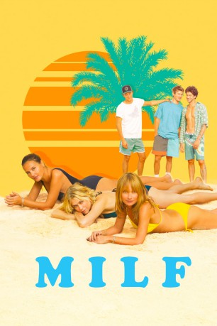
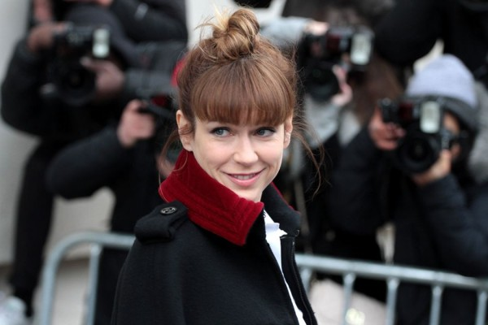

#11616 MILF - Ferien mit Happy End
 
 IMDB-Wertung: 4.5 / 10
IMDB-Wertung: 4.5 / 10  Metascore: 0
Metascore: 0 
Cécile (Virginie Ledoyen), Sonia (Marie-Josée Croze) und Elise (Axelle Laffont) sind schon seit ihrer Kindheit miteinander befreundet. Gemeinsam fahren sie zur Côte d'Azur, um dort ein Haus auszuräumen und zu verkaufen. Am Strand begegnet das Trio den drei jungen Männern Paul (Waël Sersoub), Julien (Matthias Dandois) und Markus (Victor Meutelet), die sowohl amüsiert aber auch von den Frauen angezogen sind. Die alleinstehenden Freundinnen merken natürlich schnell, dass sie eine besondere Anziehungskraft auf die Männer haben und versuchen, sie zu verführen. Bei den Vorbereitungen werden die Frauen sich nach und nach ihren Verführungskünsten bewusst, da sie viel attraktiver als die Mädchen im Alter der jungen Männer, sind.
Jahr: 2018
Dauer: 101 Minuten
FSK:
Land: Frankreich Studio: StudioCanalTonspuren: - , - ,
Untertitel:
Auflösung: 1080p (1920x800) Größe: 3184 MB
Genre: Komödie
Regisseur: Axelle Laffont
Drehbuch: Jérôme L'hotsky, Stéphane Kramer, Axelle Laffont, Jean-François Halin, Alain Layrac
Soundtrack: Benjamin Molinaro
Darsteller:
-  Marie-Josée Croze als Sonia
 Virginie Ledoyen als Cécile
Virginie Ledoyen als Cécile- Sebastien Vandenberghe als Mec saoul Drakkar
- Axelle Laffont als Elise
- Waël Sersoub als Paul
- Matthias Dandois als Julien
- Victor Meutelet als Markus
- Rémi Pedevilla als Thomas
- Florence Thomassin als Christine
- Jéromine Chasseriaud als Louise
- Mitty Hazanavicius als Nina
- Pauline Bression als Maya
- Claude Attia als M. Layrac
- Anne-Marie Ponsot als Mme Layrac
- Pierre Lopez als Michel, le glacier
- Robert Assolen als Le forain
- Patrick Seminor als L'homme aigri
- Lola Donati als Jeune fille soirée
- Mathieu Molinaro als Barman Drakkar
- Sarah Fofana als Milla
- Nils Haagensen als Policier
- Rodolphe Hessmann als Policier
Datei: X:\2018(G-M)\MILF - Ferien mit Happy End (2018, FSK, 1920x800).mkv seit 13.08.2019
Festplatte: HD 2018(G-Z)-2019(A-Z)
 Es gibt insgesamt 138 Filme in der Gruppe '2018(G-M)'
Es gibt insgesamt 138 Filme in der Gruppe '2018(G-M)'